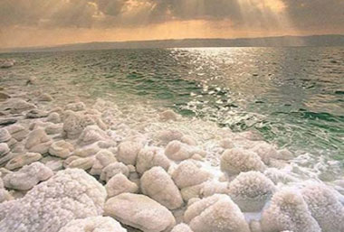
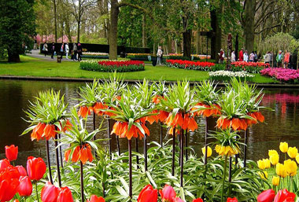
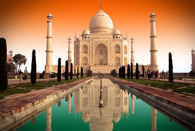
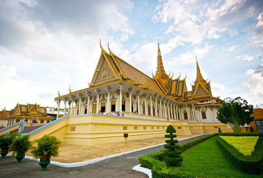

Dead Sea, Israel/Jordan
Located between Jordan and Israel, Dead Sea is actually a salt lake that is known for the fact that instead of getting tired of swimming you can fall asleep. The sea is the only place in the world where it is mixed: warm weather throughout the year, air is full of oxygen, therapeutic solar radiation, salty rich mineral, world-famous mineral mud and thermomineral warm springs. All this has a beneficial effect on the treatment of psoriasis, eczema, vitiligo (loss of pigment), skin cancer and rheumatic diseases.
Morein lake, Canada

Morein Lake is located within the oldest canadian Banf National Park, at an altitude of 1885 m. It covers an area of 0.5 km2, in the Valley of Ten Peaks. Lake Morein was created from glaciers, which have melted away from the surrounding mountains. Moreearine Sea is surrounded by preserved nature and mountain snow peaks. The beautiful blue color of the lake, which is the result of the reflection of light on the rock bottom of the lake, appears at the end of June, and a scene that attracts thousands of tourists from all over the world.
Keukenhof garden, Netherlands
Keukenhof is the largest garden in the world and certainly one of the most beautiful. It contains more than seven million lalas, daffodils and zumbulas, which are planted on a land area of about 32 hectares. While enjoying a walk in the garden, there are arrangements for arranging advice on flowers. Within the garden there are numerous restaurants and bars, and you also have the possibility to rent a bike or take a boat trip.
Taj Mahal, India
If it has this marble muzeum, it is the true gem of India. It was made by the Indian Emperor Shah Yahan almost four centuries ago in honor of his deceased wife. The building itself is a real miracle, but the surrounding environment is beautiful. India is a magical country, and certainly deserves to visit, and you should not bypass the Taj Mahal.
“The use of traveling is to regulate imagination with reality, and instead of thinking of how things may be, see them as they are.”
Angkor Wat, Cambodia
Angkor Wat is the most important and largest temple complex in the Cambodian region of Angkor, where to date more than 1000 temples have been rediscovered. It is located about 240 km north of Phnom Penh, the capital of Cambodia, and about 20 km north of Lake Tonle Sap. It was mostly built in the period from 1113 to 1150, during the reign of the Khmer king of Suryaarman II. and the largest religious building in the world.
Chinese wall, China
The Chinese wall is the largest building in the world. It stretches from the step of Central Asia to the Yellow Sea, with a total length of 8,851 kilometers (the main part 2,450 kilometers), 10 to 16 meters in height, 8 meters wide, the longest wall in the world, and the largest defense facility. The wall is about 2000 years old, it represents a place you must see before you die.
Island Bora Bora

Bora Bora is a tropical island in French Polynesia made up of 118 islands divided into 5 groups. This is a true paradise on earth and a place for total relaxation.Bora Bora is a major international tourist destination, famous for its aqua-centric luxury resorts. The major settlement, Vaitape, is on the western side of the main island, opposite the main channel into the lagoo.
Hilier lake, Australia

Of all the lakes in the world, Lake Hilier is the most unique, because it is pink in color! This lake is just like any other salt lake, but nature has played with it a little and has led us to think for a moment that we wear pink glasses. This "moment" lasts for 210 years and will not stop as long as the lake does not evaporate. Scientists still can not determine the reason why the lake looks like Pink Panter was bathed in it, but it's found to be completely harmless and you can freely scream.
“To my mind, the greatest reward and luxury of travel is to be able to experience everyday things as if for the first time, to be in a position in which almost nothing is so familiar it is taken for granted.”